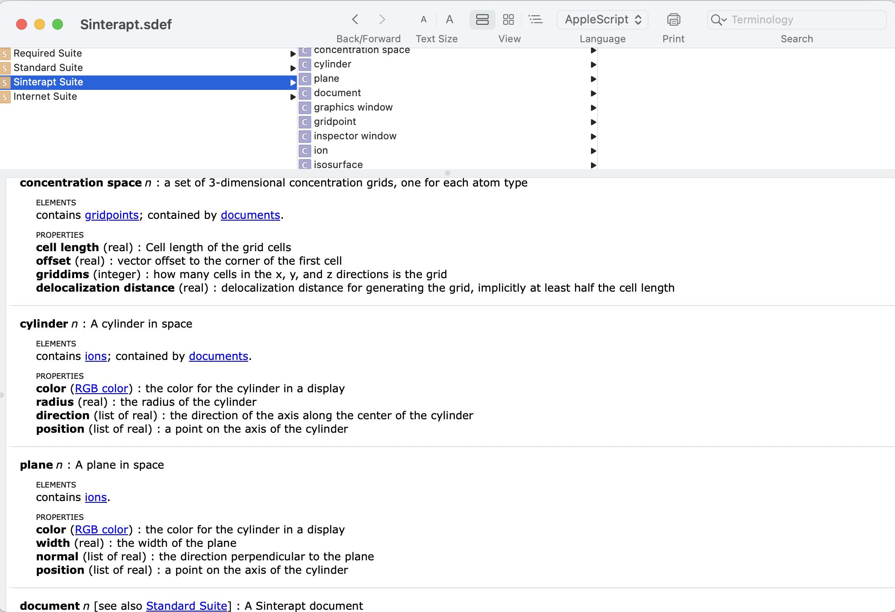
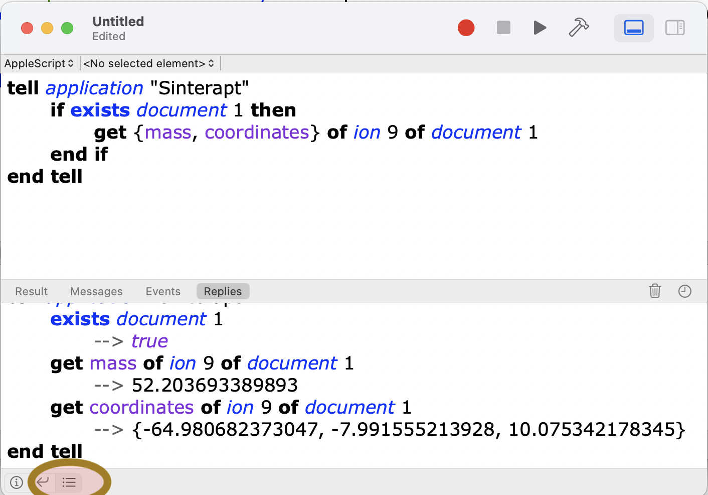
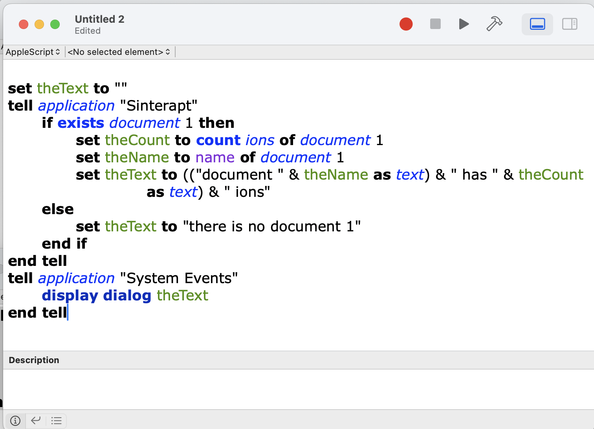

Script Editor is a fairly simple app, but there are some features which are useful to know about:
Sinterapt supports a feature called AppleScript recording, but there is currently an issue where trying to record a script breaks almost everything in the application.
So, please do not open a ScriptEditor document press the record button. I am working to resolve this issue.
The terminology understood by each application is presented in its scripting dictionary. To open an app's dictionary, choose "Open Dictionary..." from Script Editor's File menu, and select the app you want to inspect. Sinterapt's dictionary looks like this

Most helpfully, the scripting dictionary documents the various properties available for each object type, and defines the various parameters available for each command.
By default, Script Editor shows the result of the last command in the lower part of its window. However, one can have it display a more comprehensive record of its communications with the app. Select the "Log" button on the lower bar -- its shown here in this picture:

Then, select the "Replies" button to see the full transaction between Script Editor and the app. The lower panel should show each command it sent to the app, and each reply it received.
when a script is compiled, different parts of the script get different formatting, depending on how script editir has interpreted the script. So, in this example:

there are six different text formats.
bold black, for words like "set", "to", "if", "end if", "tell", "end tell". These are AppleScript primitive terms, part of the intrinsic AppleScript language
bold blue, for "exists" and "count". These are commands (i.e. verbs) that appear in the application dictionary.
italic blue, for "application", "document", "ions" and "name". These are nouns that appear in the application dictionary.
bold purple, for "display dialog". This is a command which isn't part of the core AppleScript language, but which also isn't part of the Application dictionary.
plain green, for "theCount", "theText", "theName". These are local variable names. I've used camel case with 'the' for these to differentiate them from other terms, but even if I didn't do that, Script Editor would format them this way.
plain black, for simple data types like integers and strings - "", "Sinterapt", 1, " has ", " ions". This format is also used for simple operators like + and &
Getting used to the different formats can help when you are writing a script, to make sure Script Editor has interpreted your script correctly.